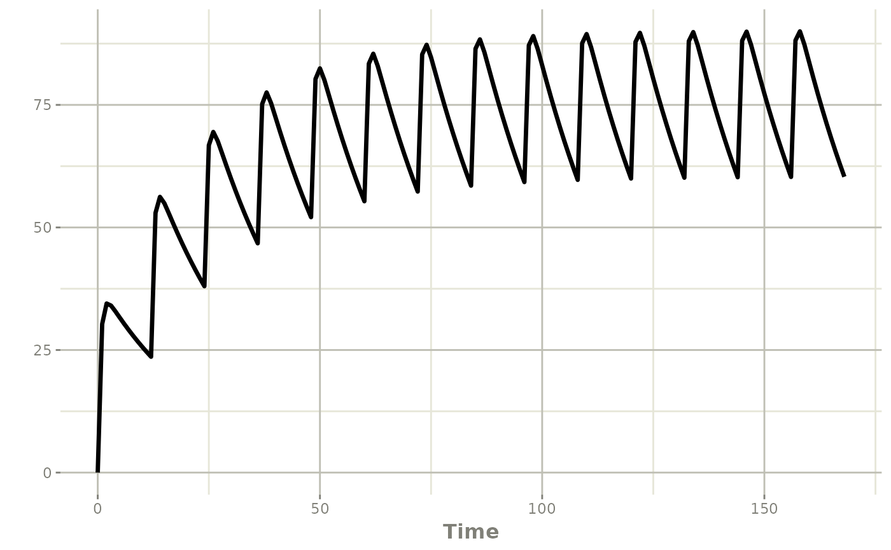
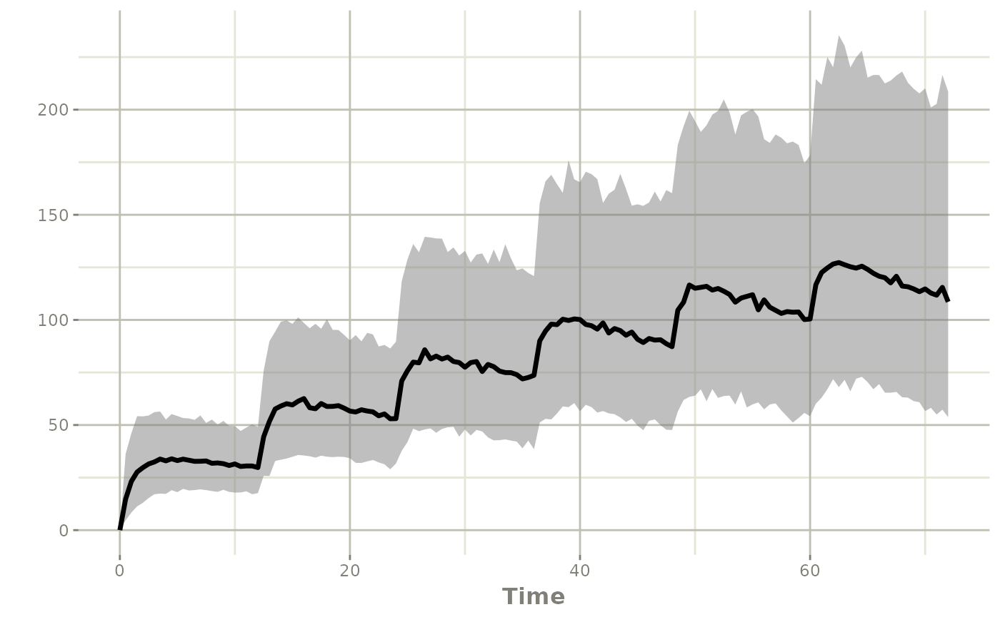

Short answers to common tasks. Each recipe is a few lines of code with a link to the page that explains it in full.
All recipes use this one-compartment oral model with between-subject variability and proportional residual error:
library(rxode2)
#> rxode2 5.1.8.9000 using 2 threads (see ?getRxThreads)
#> no cache: create with `rxCreateCache()`
mod <- function() {
ini({
tka <- log(1.15)
tcl <- log(0.135)
tv <- log(8)
eta.ka ~ 0.6
eta.cl ~ 0.3
eta.v ~ 0.1
prop.sd <- 0.1
})
model({
ka <- exp(tka + eta.ka)
cl <- exp(tcl + eta.cl)
v <- exp(tv + eta.v)
d/dt(depot) <- -ka * depot
d/dt(center) <- ka * depot - cl / v * center
cp <- center / v
cp ~ prop(prop.sd)
})
}Dosing
…give a dose every 12 hours for a week?
ev <- et(amt = 300, ii = 12, until = 168) |>
et(seq(0, 168, by = 1))
s <- rxSolve(mod, ev)
#> ℹ parameter labels from comments are typically ignored in non-interactive mode
#> ℹ Need to run with the source intact to parse comments
plot(s, cp)
…give a loading dose followed by maintenance doses?
More: Combining event tables.
…give an infusion?
Give the duration with dur (or the rate with
rate), dosing into the central compartment:
More: Dosing event types.
…start at steady state?
More: Dosing event types.
…use my own NONMEM-style dataset?
Pass the data frame straight to rxSolve(); columns are
matched by name (ID, TIME, AMT,
EVID, CMT, …):
d <- data.frame(ID = 1, TIME = c(0, 1, 2, 4, 8, 12),
AMT = c(300, 0, 0, 0, 0, 0), EVID = c(1, 0, 0, 0, 0, 0),
CMT = c("depot", rep("center", 5)))
s <- rxSolve(mod, d)More: Dataset columns.
…dose based on the current model state?
Use bolus(), infuse() and friends inside
model().
More: Dosing from inside the model.
Simulation
…simulate the typical individual (no variability)?
ev <- et(amt = 300, ii = 12, until = 72) |>
et(seq(0, 72, by = 0.5))
s <- rxSolve(zeroRe(mod), ev)
#> ℹ parameter labels from comments are typically ignored in non-interactive mode
#> ℹ Need to run with the source intact to parse comments
#> ℹ omega/sigma items treated as zero: 'eta.ka', 'eta.cl', 'eta.v'More: ?zeroRe.
…simulate a population?
s <- rxSolve(mod, ev, nSub = 100)Each subject draws its own eta values from the
ini() block. More: Simulating
populations.
…get simulated observations with residual error?
The endpoint cp ~ prop(prop.sd) adds residual error; the
simulated observation is in the sim column, the prediction
stays in cp (subjects simulated with nSub are
numbered in sim.id):
…make a simulation reproducible?
s1 <- rxSolve(mod, ev, nSub = 10, seed = 42)
s2 <- rxSolve(mod, ev, nSub = 10, seed = 42)
all.equal(s1$sim, s2$sim)
#> [1] TRUEMore: ?rxWithSeed.
…add parameter uncertainty?
Give a covariance matrix for the population parameters with
thetaMat and the number of studies with
nStud:
More: Parameter uncertainty.
…summarize a simulation with prediction intervals?
s <- rxSolve(mod, ev, nSub = 200, seed = 42)
ci <- confint(s, "sim", level = 0.90)
#> ! in order to put confidence bands around the intervals, you need at least 2500 simulations
#> summarizing data...done
plot(ci)
…simulate between-occasion variability?
More: Nesting levels.
Covariates
…add a covariate effect?
Pipe a new line into the model; the covariate WT becomes
an input:
modWt <- mod |>
model(cl <- exp(tcl + eta.cl) * (WT / 70)^0.75)
#> ℹ parameter labels from comments are typically ignored in non-interactive mode
#> ℹ Need to run with the source intact to parse comments
#> ℹ add covariate `WT`More: Modifying models.
…give each subject their own covariate value?
s <- rxSolve(modWt, ev,
iCov = data.frame(id = 1:4, WT = c(50, 70, 90, 110)))More: Covariates.
…use a covariate that changes over time?
Add it as a column of the data; values are interpolated between rows:
d <- as.data.frame(et(amt = 300, ii = 24, until = 96) |>
et(seq(0, 96, by = 4)))
d$WT <- 70 - d$time / 24
s <- rxSolve(modWt, d)More: Covariates.
Output and speed
…get output only at specific times?
ev <- et(amt = 300) |> et(c(0.5, 1, 2, 4, 8, 12, 24))
rxSolve(zeroRe(mod), ev)
#> ℹ parameter labels from comments are typically ignored in non-interactive mode
#> ℹ Need to run with the source intact to parse comments
#> ℹ omega/sigma items treated as zero: 'eta.ka', 'eta.cl', 'eta.v'
#> ── Solved rxode2 object ──
#> ── Parameters (x$params): ──
#> tka tcl tv prop.sd eta.ka eta.cl eta.v
#> 0.1397619 -2.0024805 2.0794415 0.0000000 0.0000000 0.0000000 0.0000000
#> ── Initial Conditions (x$inits): ──
#> depot center
#> 0 0
#> ── First part of data (object): ──
#> # A tibble: 7 × 9
#> time ka cl v cp ipredSim sim depot center
#> <dbl> <dbl> <dbl> <dbl> <dbl> <dbl> <dbl> <dbl> <dbl>
#> 1 0.5 1.15 0.135 8.00 16.3 16.3 16.3 169. 131.
#> 2 1 1.15 0.135 8.00 25.4 25.4 25.4 95.0 203.
#> 3 2 1.15 0.135 8.00 33.0 33.0 33.0 30.1 264.
#> 4 4 1.15 0.135 8.00 35.2 35.2 35.2 3.02 282.
#> 5 8 1.15 0.135 8.00 33.2 33.2 33.2 0.0303 266.
#> 6 12 1.15 0.135 8.00 31.1 31.1 31.1 0.000305 249.
#> # ℹ 1 more row…solve faster?
Use more threads for multi-subject problems:
s <- rxSolve(mod, ev, nSub = 100, cores = 2)More: Speeding up solving.
…solve a population too large for memory?
More: Out-of-memory solving.
Models
…change an initial estimate or fix a parameter?
mod2 <- mod |> ini(tcl = log(0.2))
#> ℹ parameter labels from comments are typically ignored in non-interactive mode
#> ℹ Need to run with the source intact to parse comments
#> ℹ change initial estimate of `tcl` to `-1.6094379124341`
mod3 <- mod |> ini(tv = fix)
#> ℹ parameter labels from comments are typically ignored in non-interactive mode
#> ℹ Need to run with the source intact to parse comments
#> ℹ fix `tv` to `2.07944154167984`More: Modifying models.
…see one line of a model?
modelExtract(mod, cl)
#> ℹ parameter labels from comments are typically ignored in non-interactive mode
#> ℹ Need to run with the source intact to parse comments
#> [1] "cl <- exp(tcl + eta.cl)"